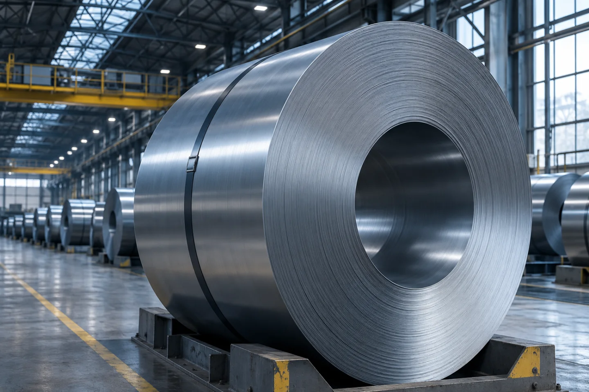

Warsztat dla kierowników projektów
09:00–15:00 · z przerwami
Copilot w pracy PM-a
Zacznij od tego, jak działają modele językowe. Potem poprowadź projekt Baza wiedzy Nordsteel. Porównaj wymagania, sprawdź źródła i przygotuj decyzję dla sponsora, gdy dostawca zmieni warunki wdrożenia.
Rozpocznij warsztat
Program warsztatu
- 00 Wstęp do modeli językowych 09:00–10:00
- 01 Ustal zakres pilota 10:15–10:45
- 02 Sprawdź źródło 10:45–11:05
- 03 Pre-mortem pilota 11:15–11:35
- 04 Przetestuj dashboard 11:35–11:55
- 05 Czerwony długopis 12:25–12:40
- 06 Zaktualizuj projekt po dwóch wiadomościach 12:40–13:35
- 07 Komunikacja dla sponsora 13:45–14:35
Lunch 11:55–12:25, podsumowanie 14:35–15:00. W ciągu dnia zaplanowano trzy krótkie przerwy.